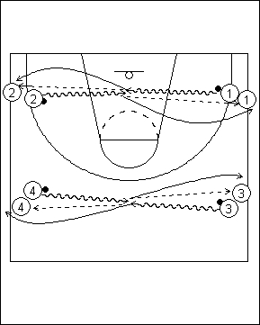

Catégorie : DRIBBLE (Dr-001)
Déroulement
- Les joueurs sont disposés sur deux files de part et d’autre du terrain. L’idéal est de placer deux joueurs dans chaque file (c’est le minimum, mais on peut en mettre plus). Plusieurs groupes peuvent ainsi être formés. Un ballon au premier de chaque file.
- Au premier signal du Coach, les premiers des files 1 et 2 (idem pour 3 et 4, 5 et 6, etc ...) partent rapidement en dribble et s’arrêtent lorsqu’ils se rejoignent à mi-distance.
- Là, ils effectuent le dribble bas de protection tout en essayant de chasser le ballon de l’adversaire.
- Au deuxième signal du Coach (après 5 secondes de travail?), 1 et 2 (idem pour 3 et 4, 5 et 6, etc …) passent dans la file opposée et suivent le ballon pour rejoindre également la file opposée.
Coaching points
- Insister sur la qualité du passage du dribble haut et rapide au dribble bas de protection.